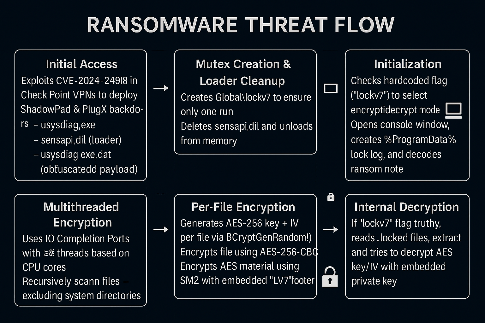

NailaoLocker is a ransomware family written in C++, attributed to the Chinese-linked APT cluster "Green Nailao", and is known for overlaps with ShadowPad and PlugX. The malware uses DLL side-loading and implements AES-256-CBC encryption with SM2 public key wrapping, primarily targeting healthcare entities in Europe.
🧩 Malware Overview
Name: NailaoLocker
Language: C++
Delivery: DLL Side-loading
Encryption: AES‑256‑CBC + SM2-wrapped AES keys
Extension: .locked
Note: Ransom note extracted via XOR
Discovery: June 2024 (full analysis Feb 2025)
⚙️ Infection & Execution Flow

Exploits CVE‑2024‑24919 in Check Point VPN appliances
Deploys:
usysdiag.exe (host executable)
sensapi.dll (malicious loader)
usysdiag.exe.dat (payload)
Creates mutex Global\lockv7, deletes loader for stealth
Starts IOCP threads for concurrent encryption
Encrypts using AES-256-CBC per file and appends .locked
Appends "LV7" metadata footer with SM2-wrapped AES keys
Ransom note decoded and displayed via console + lock.log
🔍 Static Analysis Highlights
Payload XOR-decrypted and injected into memory
Console shows live encryption stats
Private SM2 key embedded, but decryption fails
Hardcoded mode flag ("lockv7") determines encrypt/decrypt behavior
💻 Dynamic Behavior
Uses IOCP threading to maximize encryption throughput
Use YARA/Sigma rules for XOR decryption and "LV7" signature
📣 Final Thoughts
NailaoLocker represents a hybrid between espionage tooling and ransomware. Although technically flawed due to its broken decryption logic, its multithreaded encryption, embedded SM2 cryptography, and use of side-loaded loaders reflect APT sophistication. Detection hinges on recognizing behavioral signals like mutex creation, AES-based encryption, and metadata markers.